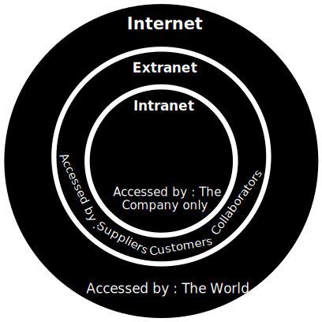
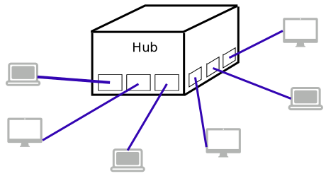
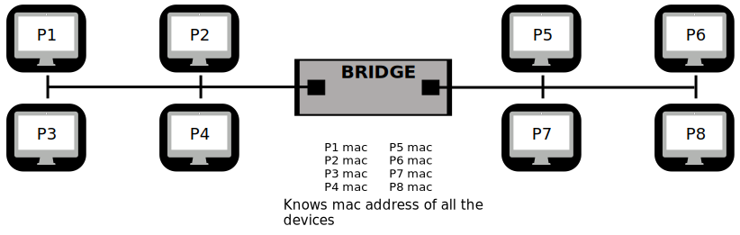

Network Layer
The Network Layer, the third layer of the OSI model, plays a crucial role in facilitating communication
across a network.
In simple terms, the Network Layer in the OSI model is like the traffic manager of a city. Its main
job is to determine the best routes for data to travel from one computer to another in a network. It
deals with logical addressing, such as IP addresses, and makes decisions about the most efficient way to
deliver data packets across different networks. Just as a traffic manager guides vehicles through the
city streets, the Network Layer directs data through the interconnected web of devices and networks,
ensuring it reaches its destination accurately and efficiently.
Let's delve into its key characteristics and functions:
- Service Handling: The Network Layer is responsible for handling service requests
from the transport layer. It acts as an interface between the upper-layer protocols and the
underlying data link layer.
- Address Translation: One of its primary tasks is translating logical addresses
(such as IP addresses) into physical addresses (like MAC addresses). This translation is vital for
efficient data transmission across the network.
- Routing and Path Determination: The network layer determines the route that data
packets will take from the source to the destination. It makes decisions on how to forward packets
through various network devices, optimizing the path for efficient delivery.
- Traffic Management: Managing network traffic is a critical function. This involves
handling issues like switching, routing decisions, and congestion control to ensure smooth and
reliable data packet flow.
- Packet Movement: The core role of the network layer is to oversee (supervise,
manage) the movement of
packets from the sending host to the receiving host. This involves coordinating with lower layers
and making routing decisions based on logical addressing.
In summary, the Network Layer acts as a pivotal component in the OSI model, providing essential services
for addressing, routing, and efficient data transfer across interconnected devices within a network.
Key Functions of the Network Layer
- Routing: The network layer is responsible for determining the path that a
packet should take from the source to the destination. When a packet arrives at a router's input
link, the router makes decisions on how to forward it to the appropriate output link. For
instance, a packet from source S1 to destination R1 needs to be routed through the next router
on the path to S2.
- Logical Addressing: While the data link layer deals with physical addressing,
the network layer handles logical addressing. Logical addresses help differentiate between
source and destination systems. When forwarding a packet, the network layer adds a header
containing logical addresses for both the sender and the receiver.
- Internetworking: The primary role of the network layer is to establish logical
connections between different types of networks. It enables communication across diverse network
architectures and technologies.
- Fragmentation: Fragmentation involves breaking packets into smaller individual
data units to facilitate transmission through various networks. This process ensures that data
can traverse networks with varying maximum packet sizes.
Services Offered by the Network Layer
- Guaranteed Delivery: The network layer provides a service ensuring that packets
will reach their destination reliably.
- Guaranteed Delivery with Bounded Delay: This service guarantees that packets
will be delivered within a specified host-to-host delay bound, ensuring timely communication.
- In-Order Packets: The network layer ensures that packets arrive at the
destination in the same order in which they were sent, maintaining the sequence of transmitted
data.
- Guaranteed Max Jitter: This service ensures that the time between two
successive transmissions at the sender is equal to the time between their receipt at the
destination, minimizing variation in transmission timing.
- Security Services: The network layer enhances security through the use of a
session key between the source and destination hosts. Datagram payloads sent from the source are
encrypted, and the destination host decrypts the payload, maintaining data integrity and source
authentication.
Types of Network Layer Services
Within the network layer, services are categorized based on connections, presenting two distinct
types:
-
Connectionless Service
Connectionless services involve the routing and individual insertion of packets into the
subnet without requiring any additional setup. This approach facilitates independent packet
handling.
-
Connection-Oriented Service
For connection-oriented services, the subnet must provide a reliable service, ensuring
that
all packets are transmitted over a single route. The implementation of this service
involves:
- Implementation of Connectionless Service: Packets, termed as
"datagrams," are transmitted independently to a router via a few protocols. When the
message size to be transmitted is four times the size of a packet, the network layer
divides it into four packets, each with a destination address, and routes them
independently.
- Implementation of Connection-Oriented Service: This service
operates by
first establishing a connection, utilizing it for data transmission, and then
releasing
it. Data packets in connection-oriented services are delivered to the receiver in
the
same order as sent by the sender. There are two ways to implement this service:
- Circuit Switched Connection: Involves establishing a dedicated
physical path or circuit between communicating nodes before transferring the
data
stream.
- Virtual Circuit Switched Connection: The data stream is
transferred
over a packet-switched network, creating the illusion of a dedicated path from
the
sender to the receiver. A virtual path is established, with the possibility of
other
connections also utilizing the same path.
Virtual Circuit switching vs. Datagram Networks
The Network Layer plays a crucial role in managing
communication between devices. As we navigate through this layer's functionalities, we encounter a
significant choice that influences data transmission strategies—Virtual Circuit Switching and
Datagram Network. These two approaches offer distinct methods for forwarding data packets across
networks, each bringing its own set of characteristics and implications. To gain a comprehensive
understanding of this decision-making process, it's imperative to explore the core concepts of
Virtual Circuit Switching and Datagram Network and appreciate how they contribute to the efficiency
and reliability of data transfer within the Network Layer.
IPv4 in the Network Layer
It stands for Internet Protocol version 4. IPv4 stands as a cornerstone protocol, serving as
the underlying communication mechanism that facilitates data transfer across interconnected devices.
As we delve into the intricacies of the Network Layer, understanding IPv4 becomes imperative, as it
forms the backbone of the internet and enables the seamless exchange of data packets. IPv4, along
with its associated protocols, plays a pivotal role in addressing, routing, and ensuring the
reliable delivery of information between devices within a network. Let's explore the key protocols
associated with IPv4 and unravel the mechanisms that underpin its crucial role in modern computer
networking.
- IPv4 serves as a foundational protocol within the Network
Layer, specifically designed for packet-switched networks. Operating on a best effort delivery
model, IPv4 does not guarantee delivery, proper sequencing, or avoidance of duplicate delivery.
Widely recognized as the fourth revision of the Internet Protocol, IPv4 plays a pivotal role in
data communication across diverse networks.
- Connectionless in nature, IPv4 establishes logical connections between network devices by
assigning unique identifications to each device. The protocol is extensively employed in
packet-switched layer networks like Ethernet, providing essential addressing and routing
functionalities. IPv4 configuration methods vary, including manual and automatic configurations,
depending on the network type.
- IPv4 is formally defined and specified in the IETF publication RFC 791. It utilizes 32-bit
addresses, divided into five classes—A, B, C, D, and E—for Ethernet communication. Classes A, B,
and C differ in bit length for addressing the network host, while Class D addresses are reserved
for military purposes, and Class E addresses are reserved for future use.
- With 32-bit (4-byte) addressing, IPv4 accommodates 2^32 addresses. These addresses are expressed
in dot-decimal notation, comprising four octets separated by periods. For instance, an IPv4
address may appear as 192.168.1.5.
Network Layer Design Issues
The network layer introduces several design issues, each playing a crucial role in shaping the
functionality of this layer. These issues are outlined as follows:
-
Store and Forward Packet Switching
In the context of network layer design, the first notable issue is "Store and Forward packet
switching." Here, the host sends a packet to the nearest router, where it is stored until
fully arrived. Once the link is fully processed, including checksum verification, the packet
is forwarded to the next router in a sequential manner until it reaches its destination.
-
Services provided to Transport Layer
Through the network/transport layer interface, the network layer extends its services to the
transport layer. These services are provided with specific goals in mind:
- Offering services that do not depend on router technology.
- Protecting the transport layer from details such as the type, number, and topology of
available routers.
- Ensuring uniform numbering patterns for network addresses used by the transport layer,
both at LAN and WAN connections.
Intranet & Extranet

-
Intranet
-
Intranet is solely owned by a single organization and serves as a dedicated tool for
sharing information within the organization.
-
Functioning as a private network, access to the intranet requires a valid username and
password for security purposes.
-
This network has a limited number of connected devices compared to the internet, ensuring
a high level of security with a restricted number of visitors.
-
Intranet is primarily utilized for obtaining employee information, telephone directories,
and other internal resources.
-
Extranet
-
Extranet can be owned by either a single organization or multiple organizations.
-
Managed on a contractual basis between organizations, it serves as a tool for sharing
information between internal members and external collaborators.
-
Similar to intranet, the extranet is a private network, and access is restricted to
individuals with valid usernames and passwords.
-
Extranet functionality includes checking status, accessing data, sending emails, and
placing orders, fostering collaborative communication between entities.
Network Addressing
-
Network Addressing is a fundamental responsibility of the network layer, involving the assignment
of logical, software-based addresses.
-
A host, also known as an end system, has a single link to the network, and the boundary between
the host and the link is termed as an interface. Each host can have only one interface.
- A host refers to any device that is connected to a network and uses network resources. Hosts
can include computers, servers, printers, or any other device that participates in network
communication. Essentially, a host is an end system that generates or consumes data within a
network.
-
On the other hand, a router differs from a host as it has two or more links connecting to it.
When a router forwards a datagram, it directs the packet to one of its links. The boundary
between the router and the link is called an interface, and routers can have multiple
interfaces, one for each link.
- In networking, a router is a device that connects different networks and directs data
traffic between them. An interface, in the context of a router, refers to the connection
point between the router and a specific network link. Each interface on a router represents
a distinct network link to which the router is connected.
- For example, consider a router in a home network setup. This router typically has multiple
interfaces—one connected to the local home network and another to the external network, such
as the internet. Each of these connections constitutes an interface on the router.
-
Each interface on a router is capable of sending and receiving IP packets. Consequently, IP
requires each interface to have a distinct address.
-
Each IP address is 32 bits long and is represented in "dot-decimal notation," where each byte is
expressed in decimal form and separated by periods. For example, an IP address would look like
193.32.216.9, where 193 represents the decimal notation of the
first 8 bits of an address, 32 represents the decimal notation of the second 8 bits of an
address.
-
We need IP addresses to uniquely identify and locate devices on a network. They play a crucial
role in enabling communication between different devices by providing a standardized way to
identify each device.
-
For example, a host can be a computer, and its IP address (e.g., 192.168.1.1) uniquely identifies
it on the network. This allows other devices to send data to and receive data from the specific
host.
Network Devices
These are physical devices which are required for communication and interaction between hardware on
computer network.
- Common network devices:
- Repeater
- Hub
- Switches
- Router
- Bridges
- Gateways
- Modems
Repeater
- A repeater operates at the Physical layer of the networking model.
- Its primary function is to receive incoming signals, and subsequently, re-transmit these signals
to extend their reach over longer distances. Essentially, repeaters help overcome the
limitations of signal attenuation during transmission.
- Contrary to common belief, repeaters do not amplify the signal. Instead, when the signal
weakens, repeaters replicate the signal's data bit by bit and then regenerate it back to its
original strength. This process ensures that the signal remains intelligible and usable despite
the distance it travels.
- Structurally, repeaters are designed with two ports: one for signal input and another for signal
output. This allows them to intercept incoming signals, reinvigorate them, and then forward them
to the next segment of the network.
- Limitations: While repeaters are effective at combating signal degradation, they are not a
universal solution. They cannot address issues like latency, noise, or errors introduced during
transmission. For these challenges, other networking components like routers, switches, and
error correction mechanisms come into play.
- Chain of Repeaters: In scenarios where very long distances need to be covered, a chain of
repeaters can be used. Each repeater in the chain restores and retransmits the signal, further
extending its reach.
- Application: Repeaters find use in various communication mediums, including wired and wireless
networks. For example, they are employed in Ethernet networks to counteract signal degradation
over lengthy cable runs.
Hub
- A hub functions as a multi-port networking device, similar to a multiport repeater, due to its
ability to regenerate and distribute signals to multiple connected devices.
- Operating primarily at the Physical layer of networking, a hub's primary role is to facilitate
connections among computers within a Local Area Network (LAN), allowing them to communicate and
share resources.
Hubs are of three types:
- Active hub: Equipped with its own power supply, the active hub not only rejuvenates weak signals
but also amplifies and reinforces them across the network. Essentially functioning as both a
repeater and a central point for connecting cables, the active hub enhances signal quality and
serves as a distribution hub.
- Passive hub: This hub serves as a collection point for network nodes' wiring while drawing its
power supply from an active hub. It does not possess signal amplification capabilities but
rather facilitates the physical interconnection of devices within the network.
- Intelligent hub: Operating in a manner similar to an active hub, the intelligent hub offers the
additional feature of remote management capabilities. This enables network administrators to
monitor and manage the hub's performance, connections, and potentially connected devices from a
central location.

Bridge
- Operating at the Data Link layer of the networking model, a bridge is a device that combines the
functionalities of a repeater with the ability to intelligently filter content based on the
source and destination MAC addresses.
- Bridges serve as a means of interconnecting two separate Local Area Networks (LANs) that operate
on the same network protocol, extending network connectivity.
- Unlike hubs, which indiscriminately broadcast data to all connected devices, bridges implement a
level of intelligence by selectively transmitting data only to the devices that require it. This
filtering is achieved by examining the MAC addresses of both the source and destination devices
in the data frame.

- Filtering Mechanism: A bridge maintains a table known as a MAC address table or bridge table.
This table records the MAC addresses of devices connected to each of its ports. When a data
frame arrives, the bridge checks the destination MAC address against the entries in its table
and forwards the frame only to the port associated with the destination device, reducing
unnecessary network traffic and improving efficiency.
Switch
- Functioning at the Data Link layer of the networking model, a switch is a multiport networking
device that builds upon the foundation of a bridge. It combines intelligent content filtering
with enhanced efficiency and performance features.
- Similar to a multiport bridge, a switch includes additional capabilities, such as buffering and
specialized design considerations, that contribute to its improved performance compared to
traditional bridges.
- One of the key differentiators between a switch and a bridge lies in the number of available
ports. While bridges typically have only two ports, switches are designed with multiple ports,
enabling numerous devices to simultaneously establish connections and communicate.
- Unlike older networking setups where bridges could transmit data only between two devices at a
time, switches can concurrently process data from multiple devices, reducing latency and
enhancing overall network throughput.
- Similar to bridges, switches also employ MAC address tables to learn the association between MAC
addresses and the corresponding switch ports. As devices transmit data, the switch populates its
table to optimize data forwarding.
Types of Switch
Network switches play a pivotal role in managing data traffic within a network. They come in
various types, each tailored to specific network requirements. Here's an overview of different
types of switches:
-
Unmanaged Switches
Unmanaged switches feature a simple plug-and-play design, offering no advanced
configuration options. They are ideal for small networks or as expansions to larger
networks.
-
Managed Switches
Managed switches provide advanced configuration options, including VLANs, QoS, and link
aggregation. They are suitable for larger and more complex networks, allowing for
centralized management.
-
Smart Switches
Smart switches have features similar to managed switches but are generally easier to set
up and manage. They are well-suited for small to medium-sized networks.
-
Layer 2 Switches
Operating at the Data Link layer of the OSI model, Layer 2 switches forward data between
devices on the same network segment.
-
Layer 3 Switches
Layer 3 switches operate at the Network layer of the OSI model and can route data between
different network segments. They are more advanced and commonly used in larger, complex
networks.
-
PoE Switches
PoE switches come with Power over Ethernet capabilities, supplying power to network
devices over the same cable used for data transmission.
-
Gigabit Switches
Gigabit switches support Gigabit Ethernet speeds, offering faster data transfer rates
compared to traditional Ethernet speeds.
-
Rack-Mounted Switches
Rack-mounted switches are designed for placement in server racks, making them suitable
for data centers or large networks.
-
Desktop Switches
Desktop switches are designed for use on desks or in small office environments, typically
smaller in size than rack-mounted switches.
-
Modular Switches
Modular switches have a design that allows for easy expansion or customization, making
them suitable for large networks and data centers.
Router
- A router is a device similar to a switch, but it operates by directing data packets based on
their IP addresses.
- Its primary role falls within the network layer of networking.
- While a switch excels at connecting devices within a network, a router has the unique ability to
connect different networks together, including LANs and WANs.
- One distinctive feature of routers is their dynamically updated routing table. This table acts
as a map that guides routers in deciding where to send data. It holds vital information,
including various IP addresses.
- Routers are like postal workers for the internet. They look at IP addresses on data packets and
decide how to best deliver them, ensuring data reaches its intended destination.
- Routers play a critical role in managing internet traffic. They determine the fastest and most
efficient paths for data to travel across the complex web of networks that make up the internet.
Gateway
- A gateway is a network node that links two separate networks using different protocols.
- It functions as a "gate" that connects and enables communication between these distinct
networks.
- A gateway can take various forms, such as a router, firewall, server, or other devices. Its role
is to allow traffic to smoothly enter and exit a network.
- One of the key roles of a gateway is to translate data between different network protocols. This
is crucial when connecting networks that use different rules for communication.
- A gateway acts as a mediator, helping networks with different communication methods understand
and exchange information.
- In the conNetwork Layer of the internet, a gateway often refers to a device that connects a
local network
to the broader internet, managing data flow and security.